Mg. Ing. Joaquín González
Carrera de Especialización en Inteligencia Artificial · CEIA FIUBA
Director: Dr. Juan Manuel Ortiz de Zarate (FCEyN-UBA)
Jurado:
Esp. Lic. Noelia Melina Qualindi (FIUBA) — noelia.qualindi@gmail.com
Esp. Ing. Diego Martín Braga (FIUBA) — diegobra20@gmail.com
Dr. Ing. Facundo Lucianna (FACET-UNT / FIUBA) — facundolucianna@gmail.com
Ciudad Autónoma de Buenos Aires, abril de 2026
El discurso tóxico y polarizante se propaga
sin contranarración efectiva
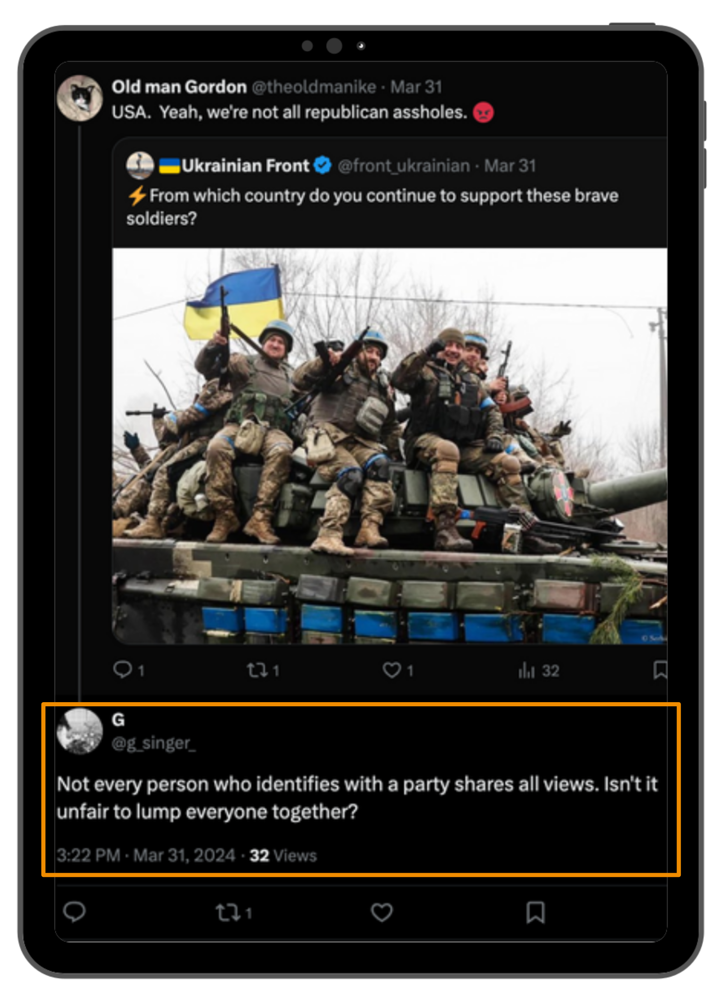
Plataforma de contranarrativas automatizadas en X.com
Este trabajo abarca tres áreas
① Plataforma de analítica de datos
② Framework de evaluación de clasificadores
③ Fine-tuning del clasificador binario
Ene 2023
Normsy en
producción
Ene 2024
Cuentas humanas
operativas
2024–2025
Pipelines de datos
y framework
Q3 2025
Cuentas
automatizadas
2025–2026
Fine-tuning
y evaluación
Abr 2026
Defensa
Recorrido: tweet tóxico detectado → clasificado → intervención publicada
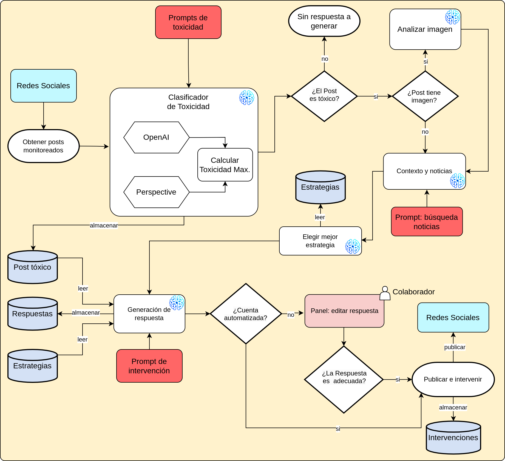
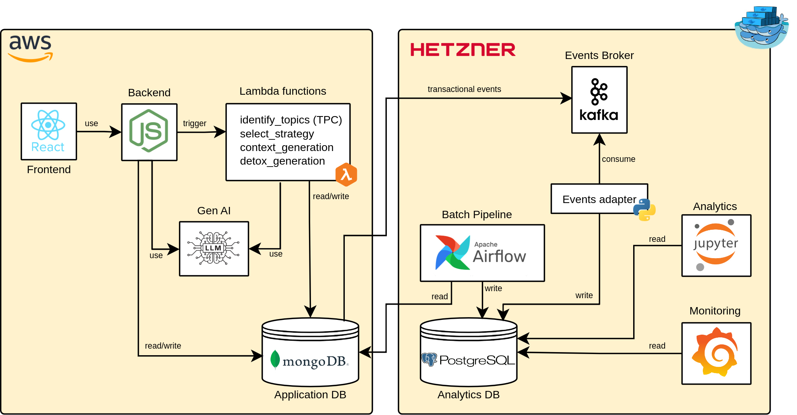
Estado inicial
MongoDB Atlas como única fuente
→ 800.000+ registros sin joins ni analítica
Consecuencia
Sin dashboards · sin EDA sistemático
Decisión de diseño
MongoDB → PostgreSQL
Esquema relacional en Hetzner
Patrón CQRS — lectura y escritura separadas
Grafana + Jupyter sobre PostgreSQL
Sin impacto sobre la base transaccional
Batch — Apache Airflow
Sincronización completa programada
17 colecciones MongoDB
Resiliente: recovery automático ante fallos
Real-time — Kafka CDC
Change Data Capture sobre MongoDB
Evento procesado en < 1 segundo
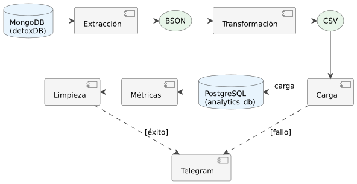
① Captura
Debezium lee el oplog de MongoDB Atlas en tiempo real
② Transporte
Kafka recibe y distribuye los eventos de cambio
③ Consumo
Consumer Python persiste en PostgreSQL analítico
Latencia end-to-end: < 1 segundo
Sin impacto sobre la base transaccional
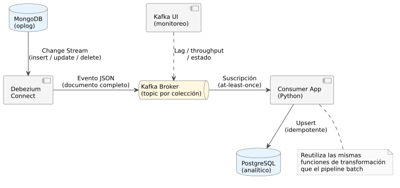
Mediana impresiones/intervención:
Humana: 8 · Automatizada: 5
Calidad individual comparable — el escalado no degrada el alcance por publicación
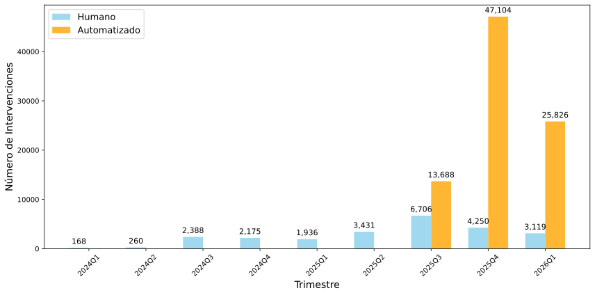
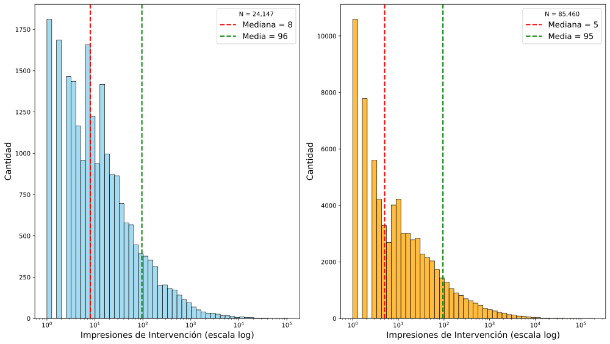
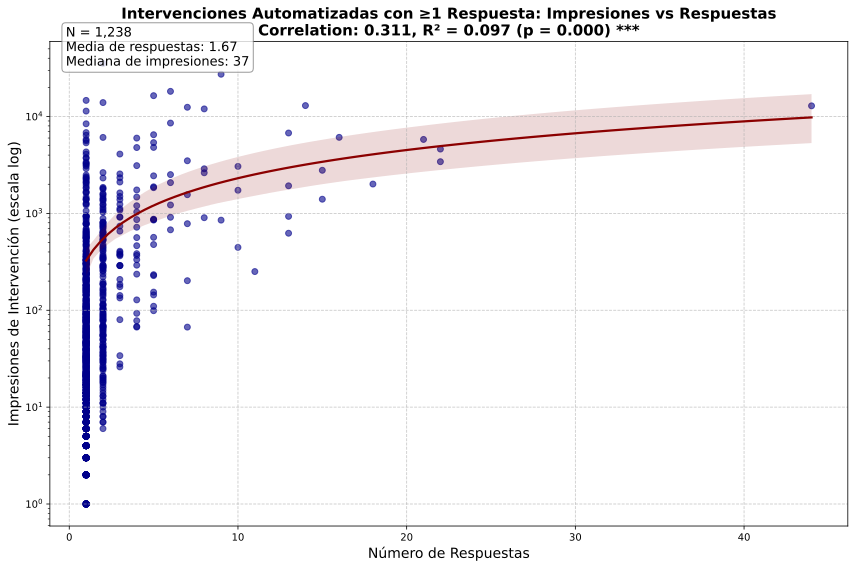
Falsos positivos
Post no tóxico clasificado como tóxico
→ intervención innecesaria publicada en X.com
→ fricción pública, erosión de credibilidad
Impacto operacional
Recursos de inferencia desperdiciados
Generación de respuestas contraproducentes
Riesgo reputacional para la plataforma
Precisión — baseline producción (escala 0–10)
0,396≈ 1 de cada 2,5 intervenciones
se activa sobre contenido no tóxico
YAML
Configuración
de experimento
CLI
run.py
punto de entrada
LLM APIs
OpenAI · Google
Anthropic · xAI · Alibaba
PostgreSQL
Resultados
y métricas
Reproducible · configuración versionada en Git · resultados persistidos por experimento
Un YAML define un experimento
Dataset, modelos, prompts y escala
en un único archivo versionado en Git
Ejecución
El CLI recorre cada combinación
modelo × prompt automáticamente
Reproducibilidad
Mismo YAML → mismos resultados
Persistidos en PostgreSQL con timestamp
test: name: "Multi-Provider Toxicity Classification" dataset: name: "ground_truth" models: - name: "gemini-2.5-flash" # Google - name: "gpt-4.1-2025-04-14" # OpenAI - name: "grok-4-fast-non-reasoning" # xAI - name: "claude-haiku-4-5" # Anthropic - name: "qwen-flash" # Alibaba ... (13 modelos total) prompts: - name: "toxicity_3_prod.jinja2" - name: "toxicity_3_alternative.jinja2" - name: "basic_tox_notox_0_3.jinja2" settings: retry_attempts: 3 prompt_scale: [0, 3]
① CLI
Lee YAML
② Dataset
Carga golden
③ Clasificación
modelo × prompt
④ Métricas
F1, precisión, recall
⑤ Persistencia
PostgreSQL
Dashboards Grafana · pipeline ETL · CDC Kafka · métricas en tiempo real
Escala 0–10 (producción inicial)
Alta ambigüedad entre niveles intermedios
Ruido subjetivo en la anotación manual
Alta dispersión inter-clase para los modelos
Escala 0–3 (propuesta)
Menor ambigüedad de anotación
Más ejemplos por clase
Misma resolución analítica útil
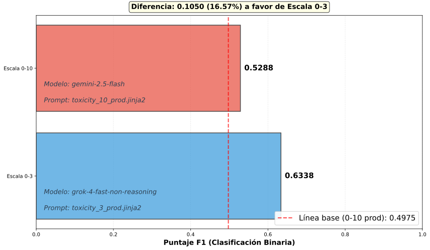
Modelos sobre la frontera:
Ninguna combinación con escala 0–10 alcanza la frontera
→ confirma superioridad de escala 0–3
Eje X: costo total (USD)
Eje Y: F1 binario
Color: tiempo de procesamiento
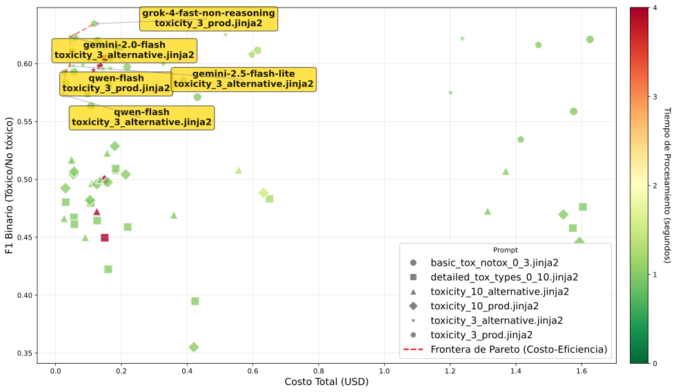
Baseline de producción (0–10)
0,396 precisión binaria
Costo asimétrico:
intervenir sobre contenido no tóxico
es más costoso que omitir uno tóxico
Alta tasa de falsos positivos
en todos los modelos evaluados
→ motiva el fine-tuning orientado a precisión
El framework permitió detectar esta debilidad
y evaluar sistemáticamente alternativas
→ sin el framework, la baja precisión no era visible
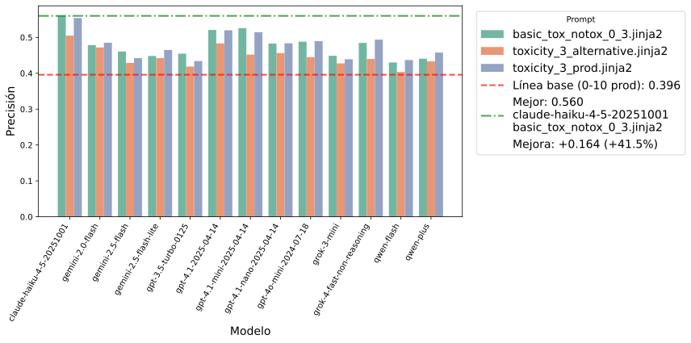
El framework detectó que todos los modelos base tienen baja precisión.
Hipótesis: ajustar un modelo con datos del dominio puede reducir
los falsos positivos y mejorar el rendimiento general.
| Versión | Modelo base | Escala |
|---|---|---|
| v1 | gemini-2.5-flash | 0–3 |
| v2 | gemini-2.5-flash-lite | 0–3 |
| v3 | gemini-2.0-flash-001 | 0–3 |
| v4 | gemini-2.5-flash | Binaria |
Técnica: LoRA (Low-Rank Adaptation)
Cada versión: endpoint dedicado en Vertex AI
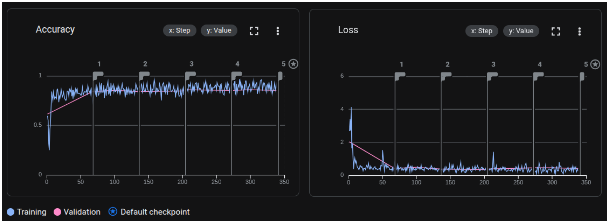
v4: 1.300 ejemplos insuficientes para superar el conocimiento previo del modelo base
→ escalar el dataset es el paso natural
SFT v3 — gemini-2.0-flash
0,649 +64,1 % vs baseline
Los modelos SFT superan
consistentemente al baseline
de producción en precisión
Menos intervenciones incorrectas
mayor confianza operacional
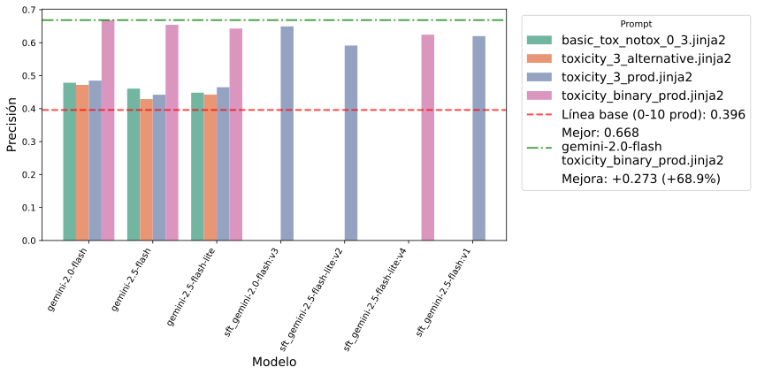
| Configuración | Mejor modelo | F1 | Precisión | Recall |
|---|---|---|---|---|
| 0–10 (baseline producción) | gemini-2.5-flash | 0,529 | 0,409 | 0,749 |
| 0–3 (sin SFT) | gemini-2.5-flash-lite | 0,611 | 0,465 | 0,891 |
| 0–3 SFT v3 | sft_gemini-2.0-flash:v3 | 0,604 | 0,649 | 0,565 |
| Binaria (prompt base, sin SFT) | gemini-2.5-flash | 0,714 | 0,654 | 0,785 |
Dataset golden: 400 posts balanceados (100 por clase), sin exposición al entrenamiento
La mejora de precisión del SFT implica reducción en recall — equilibrio aceptable dado el costo asimétrico
El modelo base ya contiene conocimiento relevante sobre toxicidad en el dominio político-partidario
1.300 ejemplos insuficientes para superar ese conocimiento previo en tarea directamente binaria
Prompt binario: alternativa de menor costo operacional con rendimiento comparable al SFT actual
Resultados presentados en tres instancias al equipo de Civic Health Project — decisiones concretas adoptadas:
① Cambio de escala
Migración de clasificación 0–10 → 0–3 en producción
② Selección de modelo
Familia Gemini adoptada como clasificador de producción
③ Escalado automatizado
Despliegue de cuentas automatizadas → 111.000+ intervenciones publicadas
Primera explotación sistemática de los datos históricos de Normsy desde su puesta en producción en enero de 2023
① Dataset — escalar el conjunto de ajuste para convergencia del SFT.
② DPO — Direct Preference Optimization para balance precisión/recall más controlado.
③ Embeddings multimodales — LLM → embeddings → SVM/XGBoost, elimina costo de inferencia por post.
¿Preguntas?
Mg. Ing. Joaquín González · CEIA FIUBA · Abril 2026